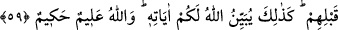

Pamuğun yanında ateş yakmak doğru değildir
Göz açıp kapayıncaya kadar evi yakar
59. Çocuklarınız ergenlik çağına girdiklerinde, kendilerinden öncekiler
(büyükleri) izin istedikleri gibi onlar da izin istesinler. İşte Allah, âyetlerini size
böyle açıklar. Allah alîmdir, hakîmdir.
“Çocuklarınız” yabancı hür çocuklar “ergenlik çağına girdiklerinde,” yanınıza
girmek istediklerinde “kendilerinden öncekilerin” daha önce bulûğa erenlerin veya
“Kendi evinizden başka evlere, geldiğinizi fark ettirip (izin alıp) ev halkına selâm
vermedikçe girmeyin” (en-Nûr, 24/27) âyetinde zikredilenlerin “izin istedikleri gibi
onlar da izin istesinler.” Yâni bunlar da kendilerinden önce zikredilenlerin izin
istedikleri gibi bütün vakitlerde izin istesinler. Kendilerine “geri dönün” denildiğinde
de dönüp gitsinler.
Ergenlik çağına ermiş köle bunlara dâhil değildir. Çünkü o, zikredilen üç vaktin
dışında kadın efendisinin yanına girerken izin isteme mecburiyetinde değildir. Nitekim
et-Tetimme’de kölenin kadın efendisinin yanına izin almadan girebileceği husûsunda
icmâ olduğu kaydedilir.
“İşte Allah, size âyetlerini böyle açıklar. Allah alîmdir, hakîmdir.” Âyetin bu kısmı
te’kid için ve izin isteme husûsunda mübâlağa için tekrar edilmiştir.
Bilesin ki erkek çocuğun ergenlik çağına ermesi meni gelmesi ve ihtilâm yâni
rüyâsında cimâ ettiğini görüp inzâl vâki olmasıyladır. Kız çocuğun ergenlik çağına
ermesi ise bu iki şeyle birlikte hâmilelik ve hayız iledir. Erkek ve kızda izi kalacak
şekilde inzalden bir şey vâki olmazsa, on beş yaşına geldiklerinde ergenlik çağına ermiş
sayılırlar. Zamanımız insanlarının ömürleri kısa olduğu için meşhûr ve müftâ bih görüş
budur Sahâbeden bazıları, önceki ümmetler içinde seksen yaşına ulaştığı halde ihtilam
olmayan kişilerin bulunduğunu haber vermişlerdir. Vehb der ki: Âdem (a.s.)’in
çocuklarından en küçük yaşta vefat eden, iki yüz yaşında vefat etmiştir.
Erkek çocuk için ergenliğe erme yaşı asgari on ikidir. Dolayısıyla erkek ölünün
yaşından bu müddet çıkarılır, sonra geri kalan ömrü hesap edilerek buna göre
namazlarının fidyesi verilir. Kız çocuğunun ergenliğe erme yaşı ise, tercih edilen görüşe
göre asgari dokuzdur. Dolayısıyla kadın ölünün yaşından bu müddet çıkarılır. Bu
müddet zarfında geçen namazların fidye ile iskâtına gerek kalmaz.
Bu zâhirdeki bülûğ/ergenliktir. Bâtınî ergenlik ise hakîkat sırrına ulaşmak iledir.
Bunun kemâle ermesi ise perdelerin ilk olarak keşfolunmasından itibaren kırk yılda
olur. Bazılarında ise bu hâlin alâmeti çocukluk zamanında meydana gelir.